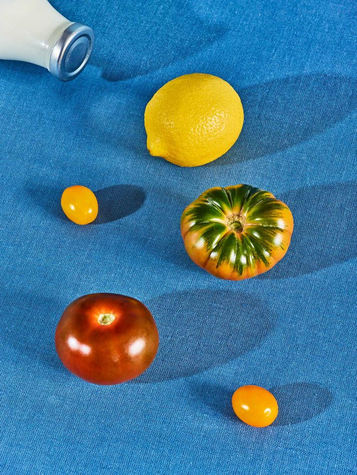
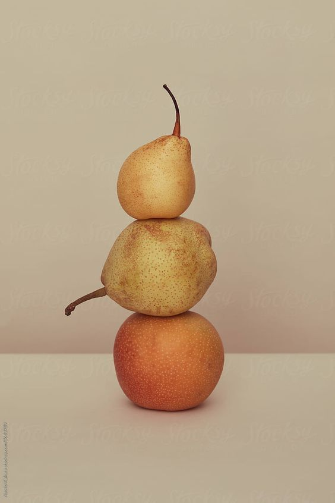
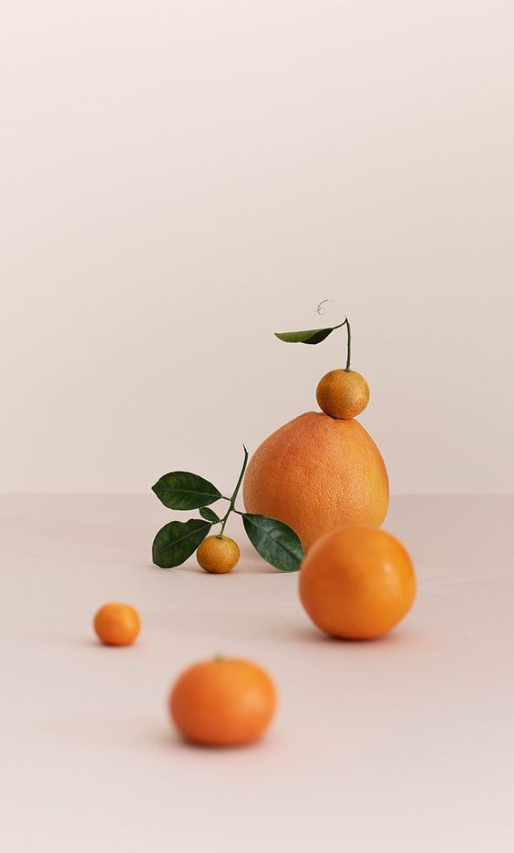

Новинки
tg us @tgprojectname
show your noodles

Promo 1

Promo 2

Promo 3
Фраза 1
Фраза 2
Фраза 3
About our team
We promise we will never waiver from the commitment to the highest quality and standards that Kazuo Mori founded in 1953. We promise we will never waiver from the commitment to the highest quality and standards that Kazuo Mori founded in 1953. We promise we will never waiver from the commitment to the highest quality and standards that Kazuo Mori founded in 1953.